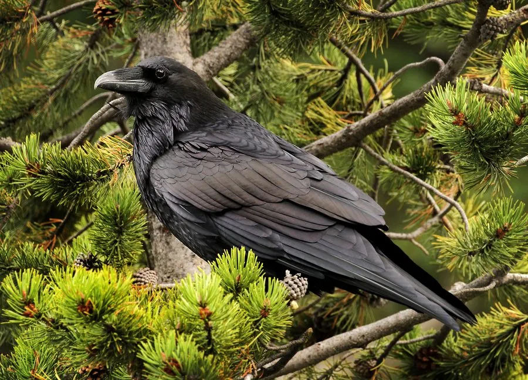

鸟类 · 动物界
渡鸦 Corvus corax

体型最大的雀形目鸟类，通体乌黑并泛着紫蓝色金属光泽，智商极高，既会使用工具又能模仿多种声音。
- 分类
- 门脊索动物门纲鸟纲目雀形目科鸦科属鸦属
- 栖息环境
- 山地、草原、荒漠、海岸和城镇边缘，从北极苔原到沙漠都能生存
- 地理分布
- 北半球广泛分布，中国见于西北和青藏高原，多为留鸟
- 保护级别
- IUCN 无危（LC）；中国境内种群未列入国家重点保护名录
物种志
渡鸦体长 54–67 cm，翼展 115–150 cm，体重 0.7–2 kg，是雀形目鸟类中体型最大的成员。全身羽毛乌黑，在阳光下泛出紫蓝和铜绿色金属光泽，喙粗壮而略弯，喉部羽毛蓬松，尾羽呈楔形。飞行时翅膀拍动缓慢而有力，常在空中翻滚、俯冲做特技动作。
渡鸦是北半球分布最广的鸟类之一，从北极苔原、山地、草原、荒漠到海岸和城镇边缘都能生存，中国见于西北和青藏高原，多为留鸟。它们是杂食性鸟类，吃腐肉、昆虫、谷物、浆果、鸟蛋和雏鸟，在北极地区常跟随北极熊捡食猎物残骸。渡鸦每年 2–4 月在高树或悬崖上筑巢，每窝产卵 3–7 枚，孵化 18–21 天。它的智力在鸟类中名列前茅，能使用工具、模仿声音，还会故意从雪坡滑下、在空中翻飞来玩耍。
形态与习性
- 食性腐肉、昆虫、谷物、浆果、鸟蛋和雏鸟
- 体长54–67 cm
- 翼展115–150 cm
- 体重0.7–2 kg
- 繁殖每窝 3–7 枚卵，孵化 18–21 天
- 智力能使用工具、模仿声音，还会进行游戏行为
- 寿命野外约 10–15 年，圈养可超过 40 年
趣味知识
- 渡鸦能模仿多种声音，包括其他鸟类的叫声和人类说话，是鸦科中的模仿高手。
- 它会用喙叼起小树枝或石块取出缝隙里的食物，是少数会使用工具的鸟。
- 渡鸦有玩耍行为，会故意从雪坡上滑下、在空中翻滚，重复取乐。
- 在北极地区，渡鸦会跟随北极熊捡食其捕猎后留下的残骸。